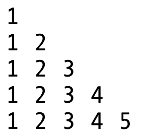

Lecture Notes 11: Debugging And Practice with Loops
A Primer on Debugging
A Bug is a logical error in your code.
For example, the following code attempts to determine if a number is inside, outside, or at a limit of an interval:
num = eval (input ("give me a number: "))
if 0 < num < 1 :
print ("inside")
elif num < 0 and num > 1:
print ("outside")
else:
print ("limit")
Try it out
here
Activity 1 [2 minutes]:
Can you see anything wrong with this?
Another example: the following code attempts to obtain the factorial of a number (this time using a for loop):
def main():
num = 5
fac = factorial(num)
print("The result for {:d} is {:d}".format(num, fac))
def factorial(x):
mult = 1
for i in range(1,x+1):
mult *= x
return mult
if __name__ == "__main__":
main()
Try it out
here
Activity 2 [2 minutes]:
Can you see anything wrong with this?
Debugging
To
de-bug is to remove these logical errors from your code.
Failure cases
The first important step is to
identify a case (or many cases) for which your code fails.
That usually gives you enough information, but if you still can't see the problem, you proceed with debugging.
There are two main approaches:
- Using debugging print statements to track your progress inside the code
- Executing the code in debug mode, where it runs the lines one by one and let's you examine the contents of the variables
- (similar to debugging is using a visualizer like the python tutor... which is good for small programs)
Debugging Example 1
First step: failure cases.
- if we input a positive number.... it works
- if we input a limit number.... it works
- if we input a negative number.... it says "limit"...Which is a failure case
Now decide which approach might be smarter.
Print statements? We would need to add prints to check which conditions fail (which is a lot of extra code)
See an example
here
You will notice that even with all these prints, the problem is NOT in the individual comparisons... we would have needed the correct print!
Try the alternative prints
here
Now, let's try using the Debugger: Go to Debugging Intro in Replit and copy-paste the "intervals.py" code into main.py.
We'll use the debugger and try to identify the error.
Debugging Example 2
First step: failure cases.
- if we use num = 1 .... it works
- if we use num > 1 .... it returns a number that is too large!...Which is a failure case
let's try using the Debugger: Go to Debugging Intro in Replit and copy-paste the "factorial.py" code into main.py.
We'll use the debugger and try to identify the error.
More on nested loops (with debugging)
Let's see some examples:
Example 1: a number pyramid
We wish to generate the following structure:

First attempt (no nesting)
1
2
3
4
5
6
7
8
9
10
11
12
13
14
15
16
17
18
19
20
21 | def main():
pyramid() # prints 5 levels of numbers
def pyramid():
for j in range(1):
print(j+1, end=" ")
print()
for j in range(2):
print(j+1, end=" ")
print()
for j in range(3):
print(j+1, end=" ")
print()
for j in range(4):
print(j+1, end=" ")
print()
for j in range(5):
print(j+1, end=" ")
if __name__ == "__main__":
main()
|
Look at the code
Here
Activity 3 [2 minutes]:
In the same way we asked before, do you notice any code that is repeated?
Attempt 2: Nesting!
Let's use out old friend:
a loop to take advantage of "automated repetition!"
Steps:
- First, what is every repetition dependent on (what changes in each repetition)?
- Is this something we can use a variable for?
- If so, can we write a loop that viaries this variable?

Let's try it:
Steps:
- First, surround a single block of code ( the one that was "repeated") in a for loop (you can try a while later)
- Replace the changing parameter for the loop variable (let's use i)
- Set the varying range according to the initial range of desired values (1, 2, 3, 4, 5)
You should end up with something like this:
1
2
3
4
5
6
7
8
9
10
11
12 | def main():
pyramid() # prints 5 levels of numbers
def pyramid():
for i in range(1,5):
for j in range(i):
print(j+1, end=" ")
print()
if __name__ == "__main__":
main()
|
You can see it in action
Here!
Attempt 3: Nesting using input parameters
For greater versatility, we can change the number of times we repeat the outer loop based on some input parameter!
1
2
3
4
5
6
7
8
9
10
11
12 | def main():
pyramid(7) # prints <argument> levels of numbers
def pyramid(lim):
for i in range(1,lim+1):
for j in range(i):
print(j+1, end=" ")
print()
if __name__ == "__main__":
main()
|
Check it out
Here!
Building grids of prints with nested loops
The follwing are two ways to print a grid composed of the word "Yak":
Method 1: the power of print
def main():
for i in range(3):
print("Yak" * 4)
if __name__ == "__main__":
main()
Try out the code
here
Activity 4 [2 minutes]:
How would you modify this code so that the output loks like this:
Yak Yak Yak
Yak Yak Yak
Yak Yak Yak
Yak Yak Yak
def main():
for i in range(4):
for j in range (3):
print("Yak", end= "")
print()
if __name__ == "__main__":
main()
Try out the code
here
Activity 5 [2 minutes]:
How would you modify this code so that the output loks like this:
Yak Yak Yak Yak Yak
Yak Yak Yak Yak Yak
Yak Yak Yak Yak Yak
Yak Yak Yak Yak Yak
Homework
[Due for everyone]
Assignment 03 is out (Due 02/18 at 5PM)
[Optional]